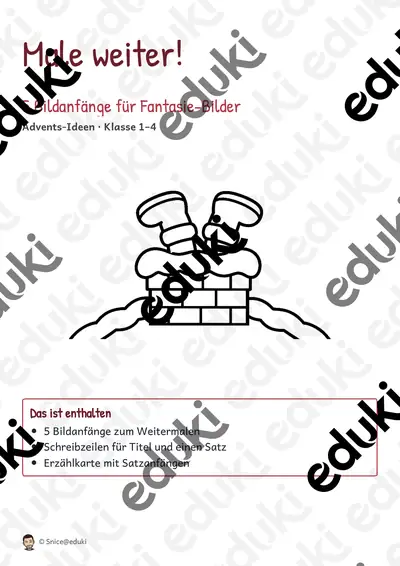
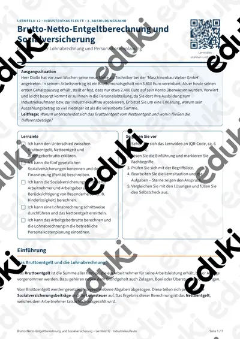
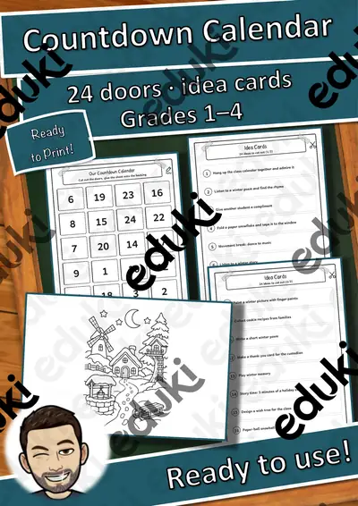
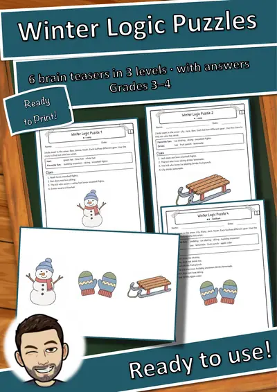
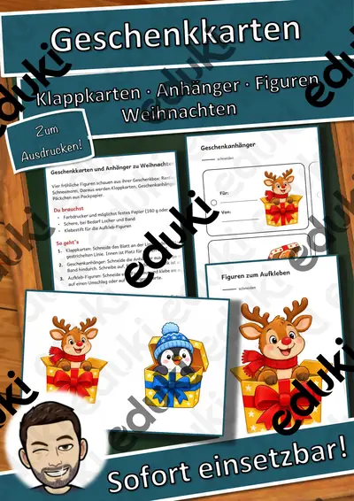

Advents-Ideen Gesamtpaket: 11 Materialien für die Adventszeit, Klasse 1–4

Male weiter!: 5 Bildanfänge für Fantasie-Bilder, Klasse 1–4

Zeichen-Duell im Advent: Genau beschreiben, genau zuhören, Klasse 2–4

Winter-Fragekarten: 32 Fragen für Kugellager und Sitzkreis, Klasse 2–4

Stadt, Land, Winter: Das Wörterspiel für die Adventszeit, Klasse 2–4

Wichteln in der Klasse: Lesetext, Regeln, Lose und Steckbrief, Klasse 2–4

Lolli-Karten: Süße Grüße zum Nikolaus und zu den Ferien, Klasse 1–4

Winter- und Weihnachtsquiz: Schätzen, rechnen, wahr oder falsch, Klasse 3–4

Mein Rückblick-Baum: Nachdenken über das Jahr, Klasse 2–4

Würfel-Pulli: Würfeln, malen, staunen, Klasse 1–4

Spiele-Adventskalender: 24 Mini-Spiele ohne Vorbereitung, Klasse 1–4

Geschenk zum Aufklappen: Ausmalbild mit Überraschung, Klasse 1–4

LF 12 Industriekaufleute: Brutto-Netto-Entgeltberechnung und Sozialversicherung – Übungen, Lösungen + Lernvideo
LF 3 Industriekaufleute: Beschaffungsplanung: Bestellpunkt- und Bestellrhythmusverfahren – Übungen, Lösungen + Lernvideo
Escape-Room Geometrie-Escape 5 – Mathematik Klasse 5 Gymnasium: 6 Stationen, 2 Schlösser

Escape-Room Zahlen und Zahlensysteme – Mathematik Klasse 5 Gymnasium: 6 Stationen, 2 Schlösser
LF 13 Anlagenmechaniker/-in SHK: Kontrollierte Wohnraumlüftung mit Wärmerückgewinnung – Übungen, Lösungen + Lernvideo
Escape-Room Sprachuntersuchung – Deutsch Klasse 6 Gymnasium: 6 Stationen, 2 Schlösser

Escape-Room Die Schreibwerkstatt – Deutsch Klasse 6 Gymnasium: 6 Stationen, 2 Schlösser
Escape-Room Das Geheimnis der Schriftrollen – Deutsch Klasse 6 Gymnasium: 6 Stationen, 2 Schlösser
Escape-Room Die Sprachkammer – Deutsch Klasse 5 Gymnasium: 6 Stationen, 2 Schlösser
Escape-Room Die Schreibwerkstatt – Deutsch Klasse 5 Gymnasium: 6 Stationen, 2 Schlösser
Escape-Room Lesen & Medien verstehen – Deutsch Klasse 5 Gymnasium: 6 Stationen, 2 Schlösser

Describe the Gnome: Descriptive Writing Prompt with 4 Pictures, Word Bank and Checklist (Grades 3-4)

The Nativity Story as Dominoes: 2 Versions with Keywords and Sentences (Grades 2-4)

Secret Kindness Elf Cards: 24 Kindness Tasks, Secret Notes and Name Slips for the Class (Grades 1-4)

Holiday Countdown Calendar for the Classroom: 24 Doors, Idea Cards and Class Plan (Grades 1-4)
Escape-Room Sprechen und Zuhören 5 – Deutsch Klasse 5 Gymnasium: 6 Stationen, 2 Schlösser

Holiday Logic Puzzles: 6 Brain Teasers at the Cookie Bakery in 3 Levels (Grades 3-4)
Escape-Room Daten und Zufall Klasse 4 – Mathematik Klasse 4 Grundschule: 6 Stationen, 2 Schlösser
Escape-Room Größen und Messen Klasse 4 – Mathematik Klasse 4 Grundschule: 6 Stationen, 2 Schlösser

Winter Logic Puzzles: 6 Snowy Brain Teasers in 3 Levels (Grades 3-4)

Escape-Room Raum und Form Klasse 4 – Mathematik Klasse 4 Grundschule: 6 Stationen, 2 Schlösser
Escape-Room Zahlen bis zur Million – Mathematik Klasse 4 Grundschule: 6 Stationen, 2 Schlösser

Escape-Room Daten und Zufall – Mathematik Klasse 3 Grundschule: 6 Stationen, 2 Schlösser
Escape-Room Größen und Messen – Mathematik Klasse 3 Grundschule: 6 Stationen, 2 Schlösser
Escape-Room Raum und Form Klasse 3 – Mathematik Klasse 3 Grundschule: 6 Stationen, 2 Schlösser

Escape-Room Zahlenraum bis 1000 – Mathematik Klasse 3 Grundschule: 6 Stationen, 2 Schlösser

Krippenhäuschen basteln: Stall zum Ausmalen und Falten mit Weihnachtsgeschichte (Klasse 1–4)

Geschenkkarten und Anhänger Weihnachten: 4 Klappkarten, 8 Anhänger und Aufkleb-Figuren (Klasse 1–4)

Escape-Room Daten und Zufall Klasse 2 – Mathematik Klasse 2 Grundschule: 6 Stationen, 2 Schlösser

3D-Weihnachtsengel basteln: Bastelvorlage zum Aufstellen mit 8 Engeln und 5 Kleidern (Klasse 1–4)

Weihnachtsengel 3D Bastelvorlage

Escape-Room Größen und Messen – Mathematik Klasse 2 Grundschule: 6 Stationen, 2 Schlösser

Escape-Room_Daten_und_Zufall_mathem_GS1

Escape-Room Daten und Zufall – Mathematik Klasse 1 Grundschule: 6 Stationen, 2 Schlösser
Escape-Room Raum und Form Klasse 2 – Mathematik Klasse 2 Grundschule: 6 Stationen, 2 Schlösser
Escape-Room Zahlen und Operationen – Mathematik Klasse 2 Grundschule: 6 Stationen, 2 Schlösser
Keine Materialien gefunden – versuch einen anderen Suchbegriff oder Filter.